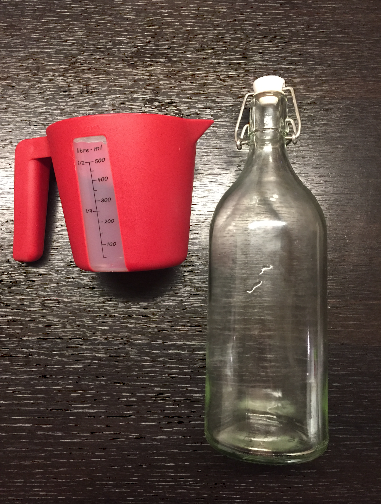

3. Grunntónn vatnsflösku
{kind=link}
3.1. Inngangur
Þegar fólk blæs á flöskustút (hornrétt á ás flöskunnar) þá heyrist blísturshljóð. Í þessari tilraun ætlum við að skoða hvernig grunntónn flösku breytist þegar við fyllum hana með vatni. Markmið okkar er að ákvarða hvernig tíðni hljóðsins sem myndast, \(f\), er háð rúmmáli vatnsins, \(V_{\text{vatn}}\), í flöskunni.
3.2. Tækjabúnaður
Um það bil \(\SI{1}{L}\) flaska sem hægt er að blása á stútinn á.
Millilítramál eða vog.
Snjallsími með forritinu
phyphoxReglustika, reiknivél og millimetrapappír.
3.3. Fræði
Við ætlum að byrja á því að leiða út tíðni tónanna sem að myndast þegar við blásum á flöskustút. Látum þverskurðarflatarmál stútsins vera \(A\) og látum hæð stútsins vera \(z\). Massi loftsins í stúttnum er þá gefinn með \(m = \rho_{\text{loft}} A z\) þar sem \(\rho_{\text{loft}} = \SI{1.25}{kg/m^3}\) er eðlismassi loftsins. Þegar við blásum á stútinn þá fer loftið inn um vegalengd \(x\) í flöskuna sjálfa og rúmmál hennar breytist þá um \(Ax\). Þetta ferli er óvermið (nánar um það hvað það þýðir eftir páska) svo að við höfum eftirfarandi varðveislulögmál \(PV^\gamma = \text{fasti}\) þar sem \(\gamma\) er fasti sem nefnist óvermnistuðullinn. Með því að taka \(\ln\) báðum meginn þá höfum við að \(\ln(P) + \gamma \ln(V) = \text{fasti}\). Við athugum líka að hér er \(V = V_0 - V_{\text{vatn}}\) þar sem \(V\) táknar heildarrúmmálið sem er eftir í flöksunni og \(V_0\) táknar upphaflega rúmmál flöskunnar áður en við byrjuðum að fylla hana með vatni. En þar með er:
Þar sem við höfum notað að \(f(x+\Delta x) \approx f(x) + f'(x)\Delta x\). En þar með ályktum við að:
Þar sem \(P_0 = \SI{1}{atm}\). En þar með höfum við eftirfarandi kraftajöfnu:
Svo við ályktum að sveiflutíðni loftsins er gefin með:
3.4. Úrvinnsla og leiðbeiningar
Blásið á stútinn og skráið niður tíðni tónsins sem myndast með því að nota
Audio Autocorrelationí forritinuphyphox. Hellið síðan vatni í flöskuna til að breyta tóninum og skráið hjá ykkur vatnsmagnið sem þið hafið hellt í flöskuna.Gerið viðeigandi graf í samræmi við jöfnu (1) til þess að ákvarða óvermnistuðul loftsins, \(\gamma\).